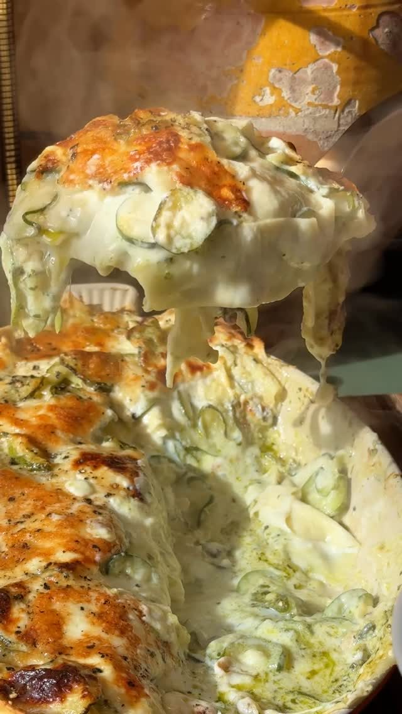

Lemon Courgette Lasagne
A creamy courgette lasagne layered with lemon béchamel and pesto.

Before you start heat the oven to 180°C fan.
Ingredients
Method
- Heat the oven to 180°C fan.
- Thinly slice the 4 courgettes.
- Fry the 2-3 garlic cloves, chopped (or 2 tsp jarred garlic) in oil, then add the courgettes. Fry until very soft. Add thyme and season to taste with salt and black pepper.
- Make a béchamel with the butter, plain flour and milk, then stir in nutmeg, salt and pepper, the zest of 1 lemon and the juice of ½ lemon.
- Assemble the lasagne in layers: courgettes, blobs of béchamel, blobs of pesto, then a lasagne sheet. Repeat 2-3 times, depending on how much filling you have.
- Top with mozzarella, Parmesan and black pepper.
- Bake at 180°C fan for 30-35 minutes, until bubbling and golden.
Notes
- The source gave no bake time or temperature — 180°C fan for 30-35 minutes is an estimate; check it's bubbling and golden before taking it out.
- No serving size was given.
- Total time is an estimate, as the source gave no timings at all.